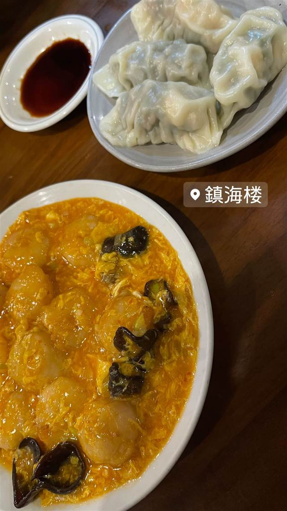

鎮海楼（ちんかいろう）
焼・蒸・水・揚げ、4種すべてに海老を使った餃子
鎮海楼
目黒の町中華の老舗「鎮海楼」は1974年創業。現在は2代目の藤井国栄氏が継ぎ、焼・蒸・水・揚げの4種すべてに海老を使った餃子が名物で、アド街をはじめ数々のテレビ番組でも紹介されてきた。
TRIVIA
豆知識
- 店主は2代目で、父が香港、母が台湾出身というルーツを持つ
- 焼・蒸・水・揚げの4種の餃子すべてに海老を使っている
REVIEWS
世間の評判
3.54食べログ
海老入り餃子の4種食べ比べ
- 海老入りでボリュームのある餃子を評価する声が多い
- 焼き・蒸し・水・揚げと食べ比べできる点を評価する声が多い
- 酢豚やエビチリなど一品料理の完成度を評価する声もある
- 常に混雑しており予約が必要という声が多い
食べログ 口コミ712件
| 創業 | 1974年創業 |
|---|---|
| 系譜 | 現在は2代目店主・藤井国栄氏が継承。父は香港出身、母は台湾出身 |
| 看板 | 海老餃子（焼・蒸・水・揚の4種すべてに海老を使用） |
| こだわり | 4種の餃子すべてに海老と肉を使った餡を包み、皮の食感をそれぞれ変えている |
| 掲載・評価 | 「出没！アド街ック天国」など複数のテレビ番組で紹介 |
| どこから | 都心 |
| 行くなら | 予約必須 |
| 予算 | 夜 ¥3,000～¥3,999 |
| 場所 | 目黒駅（東口） 東京都品川区上大崎 |
| メモ | 現金払い・電話予約が基本の昔ながらの町中華。目黒駅から徒歩圏内 |
食べたもの：餃子と中華
NEARBY
近い店・同じ系統の店
-
 ★
二郎系(直系) 目黒駅
ラーメン二郎 目黒店
慶應大学応援部出身の店主が開いた二郎の老舗
昼 ～¥999 夜 ～¥999
★
二郎系(直系) 目黒駅
ラーメン二郎 目黒店
慶應大学応援部出身の店主が開いた二郎の老舗
昼 ～¥999 夜 ～¥999
-
 ピザ 目黒駅（東口徒歩2分）
Pizzeria&Trattoria GONZO 目黒店
専用石窯で焼く薪窯ナポリピッツァと炭火焼きの肉料理が通し営業で味わえる
夜 ¥5,000～¥5,999
ピザ 目黒駅（東口徒歩2分）
Pizzeria&Trattoria GONZO 目黒店
専用石窯で焼く薪窯ナポリピッツァと炭火焼きの肉料理が通し営業で味わえる
夜 ¥5,000～¥5,999
-
 イタリアン 目黒駅（西口）
TRUNK（トランク）
国産和牛や北海道鹿肉、80種のワインと味わうイタリアン
昼 ¥1,000～¥1,999 夜 ¥4,000～¥4,999
イタリアン 目黒駅（西口）
TRUNK（トランク）
国産和牛や北海道鹿肉、80種のワインと味わうイタリアン
昼 ¥1,000～¥1,999 夜 ¥4,000～¥4,999
-
 エスニック・各国料理 目黒駅（東口）
Cabe Meguro（チャベ目黒店）
インドネシア語で唐辛子を意味する全メニューハラール対応のナシゴレン
昼 ¥1,000～¥1,999 夜 ¥3,000～¥3,999
エスニック・各国料理 目黒駅（東口）
Cabe Meguro（チャベ目黒店）
インドネシア語で唐辛子を意味する全メニューハラール対応のナシゴレン
昼 ¥1,000～¥1,999 夜 ¥3,000～¥3,999
-
 スープカレー 目黒／恵比寿
薬膳スープカレー・シャナイア（Shania）
元ITエンジニアが脱サラ、フレンチ仕込みの薬膳スープカレー
昼 ¥1,000～¥1,999 夜 ¥2,000～¥2,999
スープカレー 目黒／恵比寿
薬膳スープカレー・シャナイア（Shania）
元ITエンジニアが脱サラ、フレンチ仕込みの薬膳スープカレー
昼 ¥1,000～¥1,999 夜 ¥2,000～¥2,999
-
 ケーキ・パフェ 目黒駅
PARLOR NOON
1階のアジア料理店シェフと共同開発したプリンとトースト
昼 ¥1,000～¥1,999 夜 ¥2,000～¥2,999
ケーキ・パフェ 目黒駅
PARLOR NOON
1階のアジア料理店シェフと共同開発したプリンとトースト
昼 ¥1,000～¥1,999 夜 ¥2,000～¥2,999